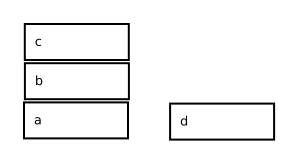

Programación lógica
Lógica formal
La lógica formal se puede definir como un sistema formal: el cuál se puede representar por sus características sintácticas y semánticas.
Un Sistema formal S es un modelo de razonamiento matemático en
el que se distinguen los siguientes componentes:
1. Sintaxis-
a) Lenguaje formal: conjunto de símbolos y fórmulas
sintácticamente correctas. Para definir un lenguaje
formal se necesita:
- Un vocabulario o alfabeto: un conjunto (infinito
numerable) de letras y símbolos a utilizar en
la construcción de S.
- Reglas que establezcan qué cadenas de símbolos
son fórmulas bien formadas en S.
b) Cálculo deductivo: conjunto de reglas que permitan
obtener fórmulas nuevas atendiendo solo a aspectos
sintácticos de los símbolos. Un cálculo deductivo
queda definido especificando:
- Un conjunto (posiblemente vacio) de fórmulas
bien formadas de S que van a utilizarse como
axiomas.
- Un conjunto finito de reglas de inferencia.
- Un concepto de deducción (demostración), for-
malizado como un conjunto de reglas para
construir las estructuras deductivas correctas,
junto con las condiciones que debe reunir una
deducción para dar como resultado un teorema
de S.
2. Semántica.
La semántica estudia la adscripción de significado a los
símbolos y fórmulas de los lenguajes formales. Para ello
se introduce el concepto de interpretación que, habitualmente,
consiste en una serie de reglas precisas que permiten asignar
objetos de un dominio (no necesariamente matemático) a ciertas
expresiones del lenguaje formal. Esto se acompaña de una noción
de valoración y un conjunto de reglas de valoración que hace
posible identificar cuándo una fórmula es verdadera en una
interpretación.
Nota: aridad es el número de argumentos u operandos que necesita un predicado, función,u operación para formular una proposición o término válido.
Lógica de primer orden o lógica de predicados
La lógica de primer orden, es un sistema formal. El lenguaje formal que se utiliza, para caracterizar las reglas, se hace a partir de un alfabeto para representar expresiones sintácticamente correctas (términos y fórmulas bien formadas).
1. Alfabeto.
a) Símbolos comunes a todos los formalismos.
- Un conjunto infinito numerable de símbolos de variables V = {X,Y, ...}
- Un conjunto de conectivas {¬,→} y cuantificadores {∀}
- Signos de puntuación: "(" , ")" , ",".
b) Símbolos propios.
Los alfabetos de cada formalismo se diferencian en sus propios símbolos,
distintos para cada uno de ellos.
- El conjunto de símbolos de constantes C = {a,b,c, ...}
- El conjunto de símbolos de función de aridad n F = {f,g,h, ...}
- El conjunto de símbolos de predicado (o conjunto de símbolos de relación
de aridad n) P = {p,q,r, ...}
2. Términos y fórmulas.
Son las cadenas de símbolos, formados de acuerdo a las
reglas inductivas especificadas como se muestra:
- Término
a) Si t ∈ (V ∪ C) entonces t es un término.
b) Si t1,t2,t3, ... tn son términos y f
es un símbolo de función entonces
f(t1,t2,t3, ... tn) es un término.
Se denota el conjunto de todos los términos
mediante la letra T. Un término básico (ground)
es un término sin variable.
- Fórmula atómica
Si t1,t2,t3, ... tn son términos y pn es
un símbolo de relación entonces pn(t1,t2,t3, ... tn)
es una fórmula atómica.
- Fórmula bien formada (fbf).
a) Toda fórmula atómica es una fbf.
b) Si A y B son fbf, también los son: (¬ A),
(¬ B) y (A → B).
c) Si A es una fbf y X ∈ V entonces, (∀X)A
es una fbf. La variable X se denomina variable
cuantificada.
Una fórmula básica (ground) es una fbf que no
contiene variables.
- Equivalencias.
(A ∨ B) es abreviatura de: ((¬A) → B)
(A ∧ B) es abreviatura de: (¬(A → (¬B)))
(A ↔ B) es abreviatura de: (¬((A → B) → (¬ (B → A))))
(∃X)A es abreviatura de: (¬((∀X)(¬A)))
En forma BNF:
<hechos> ::= <término>
<regla> ::= <término> :- <términos>
<consulta> ::= <términos>
Cuando no se usan variables y cuantificadores, en ocasiones se simplifica la fórmula atómica proposicional al usar simples variables de predicado, también llamadas variables enunciativas (e, ... , g, p). Un ejemplo es el siguiente:
mujer(madre(Lola)))
Fórmulas atómicas: son las expresiones más simples del lenguaje a las que se les puede atribuir un significado de verdadero o falso. A las cuales se les puede llamar también átomo, literal positivo, o literal negativo.
Como ejemplo tenemos lo siguiente: sea A un átomo.
Y se tiene: L1 ≡ A y L2 ≡ ¬ A
entonces L1 y L2 son un par de literales complementarias una de otra.
Ejemplos
Ejemplo 1: para cada conjunto X, hay un conjunto Y, tal que el cardinal de Y es mayor que el cardinal de X.
(∀X){conjunto(X) → (∃Y)[conjunto(Y) ∧ mayor(card(Y),card(X))]}
Ejemplo 2: todos los bloques que están encima de bloques que han sido movidos o están unidos a bloques que han sido movidos, también han sido movidos.
(∀X)(∀Y)[{bloque(X) ∧ bloque(Y) ∧ [encima(X,Y) ∨ unido(X,Y)] ∧ movido(Y)} → movido(X)]
Ocurrencia de una variable: es cualquier aparición de una variable en una fórmula
Radio de acción: ámbito o alcance de un cuantificador.
En la fbf (∀X)A, el radio de acción de (∀X) es A.
En la fbf (∃X)A, el radio de acción de (∃X) es A.
Variable ligada: es una ocurrencia de la variable X en una fbf cuando aparece dentro del radio de acción de un cuantificador universal (∀X) o un cuantificador existencial (∃X).
Variable no ligada o libre: es cuando la variable no ocurre en una fbf en el radio de acción del cuantificador universal o del cuantificador existencial.
Fórmula cerrada o sentencia: es la que tiene ocurrencia de variables libres.
Convenio: también se requiere introducir los siguientes convenios de notación referidos a metavariables que representan fbf: dada una fbf A, se escribe A(Xi) o bien A(X1,X2,X3, ... , Xn) cuando estemos interesados en prestar atención a ciertas variables que ocurren en ellas.
Expresar cuando las variables son libres: en una fbf si Xi es libre A(Xi) entonces se representará como A(t), dónde t substituye a la variable libre Xi en A.
Ejemplo: se tiene la fbf (∀X1)(r(X1,X2) → (∀X2)p(X2)), comprobar que:
1. X1 aparece ligada, ya que esta incluida en un cuantificador universal.
2. La primera ocurrencia de X2 aparece libre. Por consiguiente, la
fórmula no es cerrada; tampoco es una fórmula básica.
3. La segunda ocurrencia de X2 aparece ligada.
4. El radio de acción del cuantificador (∀X1) es la fbf (r(X1,X2) → (∀X2)p(X2)).
5. El radio de acción del cuantificador (∀X2) es la fbf p(X2).
Ejemplo de fórmula básica: (r(a,b) → p(b)), ya que no aparecen variables. Las fórmulas cerradas y las básicas formalizan enunciados.
La teoría de la deducción formaliza los conceptos de inferencia o prueba de teoremas, es decir, el proceso que permite obtener una conclusión a partir de ciertas premisas.

Los bloques se pueden representar cómo:
Relaciones: {encima(X,Y), arriba(X,Y), derecha(X,Y)}
El dominio, es: {a,b,c,d}
La relación encima, es: {(a,b),(b,c)}
La relación arriba, es: {(a,b),(b,c),(a,c)}
La relación derecha, es: {(a,d)}
Otro ejemplo:
(a) Toda madre ama a sus hijos.
(b) Julia es madre y Luis es hijo de Julia.
Se puede inferir que:
(c) Julia ama a Luis.
Se usa la lógica de primer orden:
(∀X)(∀Y)[madre(X) ∧ hijo(Y,X) → ama(X,Y)]
∀X ∀Y madre(X) ∧ hijo(Y,X) → ama(X,Y)
madre(Julia) ∧ hijo(Luis,Julia)
ama(Julia,Luis)
Siguiendo con el ejemplo, para justificar la reducción:
∀X ∀Y madre(X) ∧ hijo(Y,X) → ama(X,Y)
Si se elimina el cuantificador universala ∀X se obtiene:
∀Y (madre(Julia por X) ∧ hijo(Y,Julia por X) → ama(Julia por X,Y))
Si se elimina el cuantificador ∀Y nuevamente se obtiene:
madre(Julia por X) ∧ hijo(Luis por Y,Julia por X) → ama(Julia por X,Luis por Y)
madre(Julia) ∧ hijo(Luis,Julia) → ama(Julia,Luis)
Ahora si se aplica MP se obtiene:
ama(Julia,Luis)
Axiomas del cálculo deductivo.
Sean A, B, y C fbf:
(a) (A → (B → A))
(b) (A → (B → C)) → ((A → B) → (A → C)))
(c) (((¬A) → (¬B)) → (B → A))
(d) ((∀X)A → A), si X no aparece libre en A
(e) ((∀X)A(X) → A(t)), si t no introduce variables ligadas en A
(f) (∀X)(A → B) → (A → (∀X)B), si X no aparece libre en A
Reglas de inferencia del cálculo deductivo
Sean A y B fbf:
a) Modus ponens (MP): o regla de eliminación de la implicación,
que afirma que A y (A → B) se puede inferir como
consecuencia inmediata a B.
b) Generalización (Gen): que afirma que de A se puede inferir como
consecuencia inmediata (∀X)A, siendo X cualquier variable.
Concepto de deducción del cálculo deductivo
Sea F un conjunto de fbf. Una sucesión finita A1, A2, A3, ... , An de fbf es una deducción a partir de F si, para todo i ∈ {1, 2, 3, ... ,n}, se cumple alguna de las siguientes condiciones:
a) Ai es un axioma del cálculo deductivo
b) Ai ∈ F
c) Ai se infiere inmediatamente de los dos elementos anteriores
de la secuencia, digamos Aj y Ak (con j < i y k < i), mediante
la aplicación de la regla MP o de la regla Gen.
El último miembro An se dice que es deducible a partir de F, o que es derivable a partir de F, lo que se denota como F ⊢ An.
F ⊢ An lo que se lee como:
An es deducible a partir de F o
An es derivable a partir de F
Se dice que los elementos del conjunto F son premisas y An se llama la conclusión de la deducción. El número n de fórmulas en la sucesión A1, A2, A3, ... , An se llama longitud de la derivación o una derivación de n pasos.
Ejemplo: cómo se hacen las inferencias en el sistema deductivo. Para demostrar el siguiente teorema: ⊢ (∀X)(p(X) → p(X)), veamos lo siguiente:
Se utiliza el axioma (b) cambiando B por (p(X) → p(X)) y C por p(X).
Por lo que queda, como:
Axioma (b): (A → (B → C)) → ((A → B) → (A → C)))
(A → ((p(X) → p(X)) → p(X))) → ((A → (p(X) → p(X))) → (A → p(X))))
Se utiliza el axioma (a) cambiando B por (p(X) → p(X)).
Axioma (a): (A → (B → A))
(A → ((p(X) → p(X)) → A))
Se utiliza el axioma (a) cambiando B por p(X):
Axioma (a): (A → (B → A))
(A → (p(X) → A))
Utilizando MP, queda de la siguiente forma:
(p(X) → p(X))
Utilizando Gen, queda de la siguiente forma:
(∀X)(p(X) → p(X))
Teorema de la deducción
Teorema sean A y B fbf y F un conjunto de fbf.
1. Si F ∪ {A} ⊢ B y A es una fbf cerrada entonces, F ⊢ (A → B).
2. Si F ⊢ (A → B) entonces, F ∪ {A} ⊢ B.
Corolario 1. Sea B una fbf y F = {A1, ... , An} un conjunto de fbf cerradas. F ⊢ B si y solo si ⊢ (A1 ∧ ... ∧ An → B).
Teorema de intercambio. Sean A, B, y C[A] dos fbf cualesquiera, si ⊢ (A ↔ B) entonces ⊢ C[A] ↔ C[B].
Terminología Sea fbf ¬(A1 → (A2 → A1)), donde A1 y A2 son fbf. La estructura ¬(... → (A2 → ... )), se dice que es contexto de la fbf A1. En general, dada una fbf C que contiene una o más ocurrencias de una fbf A, se denota por C[A]. Se dice que C[] es el contexto de A.
Ejemplo
Para toda X e Y, X es nieto de Y si existe alguna Z tal que Z es hijo de Y y X es hijo de Z. Lo que se escribe de la siguiente manera:
∀X∀Y(nieto(X,Y) ← ∃Z(hijo(Z,y) ∧ hijo(X,Z)))
Si usamos la siguiente equivalencia:
φ → ψ ≡ ¬φ ∨ ψ
Para cuantificadores:
∀Xφ ≡ ¬∃X¬φ
Lo que se escribe de la siguiente manera:
∀X∀Y(nieto(X,Y) ∨ ¬∃Z(hijo(Z,Y) ∧ hijo(X,Z)))
∀X∀Y(nieto(X,Y) ∨ ∀Z ¬(hijo(Z,Y) ∧ hijo(X,Z)))
∀X∀Y∀Z(nieto(X,Y) ∨ ¬(hijo(Z,Y) ∧ hijo(X,Z)))
∀X∀Y∀Z(nieto(X,Y) ← (hijo(Z,Y) ∧ hijo(X,Z)))
La siguiente regla, es fbf:
φ0 ← φ1 ∧ ... ∧ φn (n ≥ 0)
Se define que cada φi es una literal.
Definición de literal: es un átomo o la negación de un átomo. Una literal positiva es un átomo. Una literal negativa es la negación de un átomo.
Ejemplo
Ejemplo de literal positiva: hijo(Juan,Marcos). Ejemplo de literal negativa: ¬hijo(Juan,Alicia). Si p y q son predicados f es un functor, entonces p(X,alicia) y q(Y) son literales positivas. Si se tiene: ¬(Alicia,f(Y)) es una literal negativa.
Definición de cláusula: es una disyunción finita de cero a más literales.
Definición de cláusula definitiva: es si tiene exactamente una literal positiva.
φ0 ∨ ¬φ1 ∨ ... ∨ ¬φn (n ≥ 0)
Que es equivalente a la siguiente cláusula:
φ0 ← φ1 ∧ ... ∧ φn (n ≥ 0)
Programación Lógica: Teoría y Práctica, Pascual Julián Iranzo, María Alpuente Frasnedo, Pearson, 2007.